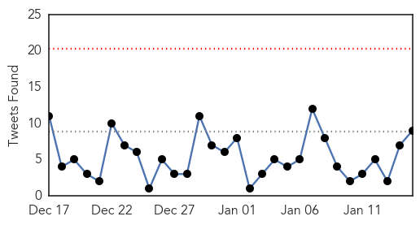

Influenza
30-Day Web Trend
1 alerts, 0 warnings

30-Day Twitter Trend
1 alerts, 0 warnings

Article Locations

Article Confidences

Top Articles:
- 1.000
- DOD offers reminders of flu dangers
- 0.999
- Vaccinations lack efficiency in battling flu season strains nationally, locally
- 0.999
- The Marysville Advocate: News
- 0.999
- Flu hits hard in Iowa
- 0.998
- Death toll from flu in Delaware continues to climb
- 0.997
- Protect yourself from the flu
- 0.996
- North Carolina flu deaths increase to 90; vaccine only 23 percent effective
- 0.994
- Flu threat expected to continue
- 0.991
- Flu shot just 23 percent effective: US
- 0.991
- Flu shot just 23 percent effective
- 0.989
- CDC: Flu shot only 12 percent effective for adults
- 0.988
- HSE admits flu vaccine is for different strain than the one that has hit Ireland
- 0.987
- Province OKs 30 new patient beds to battle spread of influenza, jammed up emergency rooms
- 0.986
- CDC: Flu vaccine is only 23 percent effective this season
- 0.983
- Flu vaccine less effective this year
- 0.983
- More than three quarters of U.S. flu shots ineffective-report
- 0.983
- More than three quarters of U.S. flu shots ineffective-report
- 0.980
- Flu strain in Wisconsin contributes to at least 3 deaths
- 0.976
- Flu shot just 23 percent effective: US
- 0.962
- Number of flu cases to rise in the Midlands
- 0.950
- More than three-quarters of this year's flu shots were ineffective
- 0.945
- Mac researchers may have found a way to outsmart the flu virus
- 0.931
- New strain of flu which can BEAT vaccine on its way to Ireland
- 0.914
- Siouxland schools report low numbers of influenza cases
- 0.910
- One Punch to Knock Out the Flu
- 0.909
- Officials monitor flu outbreaks at Iowa care centers
- 0.903
- Mutant strain of flu virus latest threat to A&Es
- 0.896
- 'Single punch' universal flu vaccine comes closer to reality
- 0.889
- No new avian flu cases reported in province
- 0.887
- 'Single punch' universal flu vaccine comes closer to reality , AniNews.in
- 0.881
- Ozaukee County toddler is third flu-related death in Wisconsin
- 0.859
- A 26-Year-Old Newlywed Suddenly Died Days After Getting the Flu
- 0.843
- Could genetically engineered chickens reverse the avian flu epidemic?
- 0.771
- KATU.com - Portland News, Sports, Traffic Weather and Breaking News - Portland, Oregon
- 0.744
- Avian Flu Scan for Jan 15, 2015
- 0.708
- The Chosun Ilbo (English Edition): Daily News from Korea
- 0.652
- Vaccine offers less protection against flu
- 0.598
- Minister for Health warns flu outbreak to impact on trolleys
Top Tweets:
- 0.589
- RT: Zhejiang Province reported a new human case of H7N9 avian influenza virus infection (CNNB, ... http://t.co/Dgp4ep…
Ebola
30-Day Web Trend
0 alerts, 0 warnings

30-Day Twitter Trend
0 alerts, 0 warnings

Article Locations

Article Confidences
Top Articles:
- 1.000
- Flu and norovirus and Ebola, oh my!
- 1.000
- American Ebola Survivor Dr. Richard Sacra Headed Back to Liberia
- 1.000
- Liberia, Sierra Leone, Guinea making Ebola strides
- 1.000
- Ebola virus: number of new cases on the decline in Africa
- 1.000
- Telluride Daily Planet: News
- 1.000
- 14 Takeaways From The 14-Part WHO Report On Ebola : Goats and Soda : NPR
- 1.000
- Suspected UK Ebola case: Person rushed to hospital after returning from West Africa with fever
- 1.000
- Ebola in the UK: Suspected Ebola patient treated in Scotland
- 1.000
- Ebola in Scotland: Patient from Fife under investigation as suspected second case of deadly disease
- 1.000
- WHO looks back on year-long Ebola battle
- 1.000
- uprisingradio.org Are We Finally Winning the War on Ebola?
- 1.000
- 14 Takeaways From The 14-Part WHO Report On Ebola
- 1.000
- Ebola virus spread slows down: WHO
- 0.999
- Ebola spread slowing in hard-hit countries: WHO
- 0.999
- Red Cross nurse dies of Ebola in Sierra Leone
- 0.999
- Edinburgh hospital woman tests negative for Ebola
- 0.999
- UN Ebola czar says epidemic has 'passed the tipping point'
- 0.999
- Man tests negative for Ebola in Edinburgh
- 0.999
- Man tests negative for Ebola in Edinburgh
- 0.999
- Ebola spread slowing in hard-hit countries: WHO
- 0.999
- Ebola tests in Edinburgh for patient who recently returned from west Africa
- 0.999
- Ebola tests in Edinburgh for patient who recently returned from west Africa
- 0.999
- UN Reports Ebola Cases in West Africa Fall to Lowest Levels in Months
- 0.999
- Ebola outbreak in West Africa appears to be slowing down: U.N.
- 0.998
- UN Ebola czar says epidemic has 'passed the tipping point', news, Health News, AsiaOne YourHealth
- 0.998
- Suspected Ebola case in Britain tests negative
- 0.998
- U.N. Ebola czar says epidemic has 'passed the tipping point'
- 0.998
- Ebola outbreak in West Africa appears to be slowing down - U.N.
- 0.998
- UPDATE 2-Ebola outbreak in West Africa appears to be slowing down -U.N.
- 0.998
- Liberia aims to be Ebola-free by end-February as cases fall to 10
- 0.998
- UPDATE 2-Ebola outbreak in West Africa appears to be slowing down -U.N.
- 0.997
- Ebola outbreak 'slowing down' in West Africa
- 0.997
- Second suspected Scots Ebola case patient currently being tested
- 0.997
- Hospital testing patient for Ebola
- 0.997
- President Koroma predicts Ebola-free Sierra Leone by May
- 0.996
- Patient suspected of suffering from Ebola tested at Northampton hospital
- 0.995
- One Year Into the Ebola Epidemic, WHO Publishes 14 Papers Providing Insights
- 0.995
- UN special envoy Nabarro sees Ebola outbreak ′slowing down′
- 0.995
- Woman Tests Negative For Ebola In Northampton
- 0.994
- UN: At least 50 Ebola hotspots remain, but new cases falling
- 0.994
- Traditional healers sensitized on Ebola fever
- 0.994
- UN: At least 50 Ebola hotspots remain, but new cases falling
- 0.993
- As anxiety wanes, Minnesota keeps eyes out for Ebola spread
- 0.992
- IFRC deeply saddened by loss of Red Cross staff member to Ebola
- 0.991
- British hospital says has suspected Ebola case
- 0.988
- US doctor to return to Liberia after Ebola recovery: 'I need to give something back'
- 0.988
- Patient tested for ebola in Edinburgh
- 0.987
- Cuban MD Who Recovered from Ebola Returns to Sierra Leone
- 0.986
- Stevenage medical technician flies to Sierra Leone to help fight Ebola virus
- 0.985
- Socio-Economic Impacts of Ebola in Sierra Leone: Sierra Leone News
Showing top 50 articles...
Top Tweets:
- 0.947
- Sara Hersey to be CDC’s first country director/ Sierra Leone. She recently led CDC Epi team in SL supporting Ebola response.
- 0.936
- WHO. 14 papers that take an in-depth look at West Africa’s first epidemic of Ebola virus disease http://t.co/0eppjQVjbh
- 0.917
- Ebola cases declining in West Africa http://t.co/6EVwKExtbB
- 0.894
- Ebola Update: 21,261 confirmed, probable and suspected cases reported in 3 most affected countries, with 8,414 deaths. EbolaResponse
- 0.886
- RT: Sierra Leone MOH Ebola Update Jan 15: 16 New Conf. Cases & 14 Susp.; 14 New Conf Deaths https://t.co/BV6vgj373Y
- 0.872
- RT: One year into Ebola epidemic: a deadly, tenacious and unforgiving virus - a WHO assessment http://t.co/XZM146AiSE
- 0.848
- RT: Ebola outbreak in Liberia could end by June, if 85% of patients get hospital care, http://t.co/sSRqQUhdyv via
- 0.830
- RT: Read about Sierra Leone's nationwide, toll-free Ebola call center. Ebola http://t.co/AkNihHdNJa http://t.co/Bew4NU0iAW
- 0.737
- Kaci Hickox, Maine nurse who defied quarantine, details Ebola mission http://t.co/VYS7uuiW64
- 0.681
- RT: For the third consecutive day, there are zero new Ebola cases in Liberia. Quite a milestone.
- 0.644
- Dr. Lise Martel to be CDC’s first country director/Guinea. She recently led team supporting Guinean MoH to est. 1st Ebola Call Center.
- 0.605
- RT: British hospital says has suspected Ebola case http://t.co/cE3I5IBWBf
- 0.586
- Sexual transmission of Ebola in Sierra Leone threatens to undermine progress http://t.co/lK5yxqAizj
- 0.580
- Suspected Ebola patient in hospital in Northampton, central England: http://t.co/W2NT1AKT80
- 0.570
- RT: Ebola survivors are helping to train health workers in Liberia. Austin, a WHO “expert patient trainer” shares how http://t.co/CG…
- 0.546
- The Race for the Ebola Vaccine http://t.co/PmhtzK0pRC
- 0.502
- Guinea, Liberia, Sierra Leone record lowest weekly of new cases in months. Today's Situation Report https://t.co/xrjCN21S4w EbolaResponse